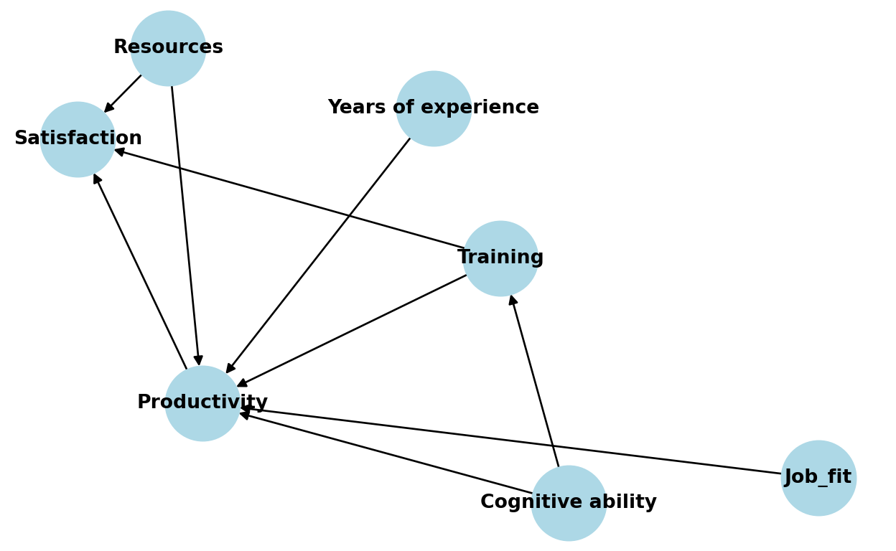
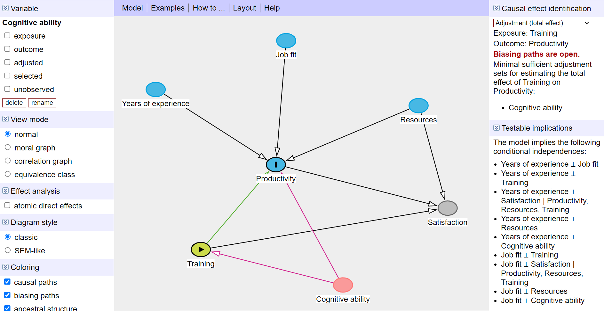

An illustration of one of the lessons I took away from studying the use of meta-learners for causal inference.
I’m just in the middle of studying the use of meta-learners for causal inference, i.e. how to repurpose conventional ML models to estimate treatment effect. One of the lessons I took away from this study so far is that no matter how fancy the ML algorithm we use, without a plausible model of the data-generating process, we cannot hope for an unbiased estimate of the treatment effect as without it, it is difficult to select relevant covariates and avoid those that introduce bias into our estimation (e.g. colliders, mediators and their descendants).
To illustrate and reinforce this lesson for myself, I coded a small example of estimating the average treatment effect of training performance on productivity using synthetic data with a known data-generating process and the Double ML method.
First, we create a DAG of the causal relationships behind our data. We see that, according to this DAG, employee productivity is affected by years of experience, job fit, available resources, and training performance, which is our variable of interest. Employee satisfaction is also part of the DAG, which is affected by available resources, employee productivity, and training performance.
import networkx as nx
import matplotlib.pyplot as plt
# initializing DAG
G = nx.DiGraph()
# adding nodes
nodes = ['Years of experience', 'Resources', 'Job_fit', 'Training', 'Productivity', 'Satisfaction', 'Cognitive ability']
G.add_nodes_from(nodes)
# adding edges
edges = [('Years of experience', 'Productivity'),
('Cognitive ability', 'Productivity'),
('Cognitive ability', 'Training'),
('Resources', 'Productivity'),
('Resources', 'Satisfaction'),
('Job_fit', 'Productivity'),
('Training', 'Productivity'),
('Training', 'Satisfaction'),
('Productivity', 'Satisfaction')]
G.add_edges_from(edges)
# drawing DAG
pos = nx.fruchterman_reingold_layout(G, seed=5, iterations = 500, k = 2)
labels = {node: node for node in G.nodes()}
nx.draw(G, pos, with_labels=True, labels=labels, node_color='lightblue', font_weight='bold', node_size=1500, font_size=10)
plt.title("DAG")
plt.show()
Now let’s generate synthetic data corresponding to this DAG.
import numpy as np
import pandas as pd
# generating synthetic data
np.random.seed(42)
n = 1000
# generating features years of experience, resources, job fit, and cognitive ability
X = np.random.normal(0, 1, (n, 4))
# setting the true causal effect of training performance
true_causal_effect = 3.5
# training is influence by cognitive ability
training = 1.8 * X[:, 3] + np.random.normal(0, 1, n)
# productivity is influenced by all features
productivity = 2 * X[:, 0] + 1 * X[:, 1] + 0.5 * X[:, 2] + 2.2 * X[:, 3] + true_causal_effect * training + np.random.normal(0, 1, n)
# defining an employee satisfaction variable that is influenced by resources, productivity, and training
satisfaction = 0.3 * X[:, 1] + 0.2 * productivity + 1.3 * training + np.random.normal(0, 1, n)
# creating a final dataFrame
df = pd.DataFrame(X, columns=['years_of_experience', 'resources', 'job_fit', 'cognitive_ability'])
df['training'] = training
df['productivity'] = productivity
df['satisfaction'] = satisfaction Without DAG, i.e., without understanding the data-generating process behind our data, we might be tempted to “throw” all available variables into our estimator. We can give it a try and use Double ML for that - a popular framework designed to provide unbiased and consistent estimates of treatment effects in the presence of high-dimensional controls while reducing the risk of overfitting. The common Double ML procedure looks as follows:
Let’s apply this approach to our data and use XGBoost models to estimate the control function and see how successful we will be in our efforts to estimate the known causal effect of training on productivity.
import numpy as np
from xgboost import XGBRegressor
from sklearn.linear_model import LinearRegression
# creating a variable for data splits
np.random.seed(42)
df['part'] = np.random.choice([0, 1], size=len(df))
estimates = []
for p in [0,1]:
# auxiliary variables for switching the roles of the two data splits
firstPart = 1-p
secondPart = p-0
# used covariates
covariates = ['years_of_experience', 'resources', 'job_fit', 'cognitive_ability', 'satisfaction']
# preparing datasets
X_First = df.loc[df['part'] == firstPart, covariates].values
y_Outcome_First = df.loc[df['part'] == firstPart,'productivity'].values
y_Treatment_First = df.loc[df['part'] == firstPart,'training'].values
X_Second = df.loc[df['part'] == secondPart, covariates].values
y_Outcome_Second = df.loc[df['part'] == secondPart,'productivity'].values
y_Treatment_Second = df.loc[df['part'] == secondPart,'training'].values
# controlling for covariates for productivity using XGBoost
model_Outcome = XGBRegressor(eta = 0.1, n_estimators =25)
model_Outcome.fit(X_First, y_Outcome_First)
residual_Outcome = y_Outcome_Second - model_Outcome.predict(X_Second)
# controlling for covariates for training using XGBoost
model_Treatment = XGBRegressor(eta = 0.1, n_estimators =25)
model_Treatment.fit(X_First, y_Treatment_First)
residual_Treatment = y_Treatment_Second - model_Treatment.predict(X_Second)
# Part 3: Estimate the causal effect using the residuals with Linear Regression
model_causal = LinearRegression()
model_causal.fit(residual_Treatment.reshape(-1, 1), residual_Outcome)
double_ml_effect = model_causal.coef_[0]
estimates.append(double_ml_effect)
LinearRegression()In a Jupyter environment, please rerun this cell to show the HTML representation or trust the notebook.
LinearRegression()
print("The estimated Average Treatment Effect is:", sum(estimates)/len(estimates))The estimated Average Treatment Effect is: 2.8913607224732614We see that the estimated causal effect of training is approximately 2.9, quite far from the known value of 3.5. How so? Well, if you look at the DAG above, you can see that by using all the variables as covariates, not only have we correctly blocked the backdoor by controlling for employee cognitive ability, but we have also introduced bias into our estimation by controlling for satisfaction, which is a collider - a variable that is affected by both the outcome (productivity) and the treatment (training). And controlling for colliders leads to spurious correlations between variables or, as in our case, deflates the size of the estimated effect. We can easily check this using DAGitty, which is a wonderful browser-based environment for creating and analysing causal diagrams.

So let’s repeat the estimation, but now without satisfaction variable as covariate. As you can see below, we are now much closer to the actual causal effect.
# creating a variable for data splits
np.random.seed(42)
df['part'] = np.random.choice([0, 1], size=len(df))
estimates = []
for p in [0,1]:
# auxiliary variables for switching the roles of the two data splits
firstPart = 1-p
secondPart = p-0
# used covariates
covariates = ['years_of_experience', 'resources', 'job_fit', 'cognitive_ability']
# preparing datasets
X_First = df.loc[df['part'] == firstPart, covariates].values
y_Outcome_First = df.loc[df['part'] == firstPart,'productivity'].values
y_Treatment_First = df.loc[df['part'] == firstPart,'training'].values
X_Second = df.loc[df['part'] == secondPart, covariates].values
y_Outcome_Second = df.loc[df['part'] == secondPart,'productivity'].values
y_Treatment_Second = df.loc[df['part'] == secondPart,'training'].values
# controlling for covariates for productivity using XGBoost
model_Outcome = XGBRegressor(eta = 0.1, n_estimators =25)
model_Outcome.fit(X_First, y_Outcome_First)
residual_Outcome = y_Outcome_Second - model_Outcome.predict(X_Second)
# controlling for covariates for training using XGBoost
model_Treatment = XGBRegressor(eta = 0.1, n_estimators =25)
model_Treatment.fit(X_First, y_Treatment_First)
residual_Treatment = y_Treatment_Second - model_Treatment.predict(X_Second)
# Part 3: Estimate the causal effect using the residuals with Linear Regression
model_causal = LinearRegression()
model_causal.fit(residual_Treatment.reshape(-1, 1), residual_Outcome)
double_ml_effect = model_causal.coef_[0]
estimates.append(double_ml_effect)
LinearRegression()In a Jupyter environment, please rerun this cell to show the HTML representation or trust the notebook.
LinearRegression()
print("The estimated Average Treatment Effect is:", sum(estimates)/len(estimates))The estimated Average Treatment Effect is: 3.477088075986001Despite the simplicity of the example presented, I think it nicely demonstrates that by using fancy ML algorithms like XGBoost, we are not relieved of the need to have a plausible model of the data-generating process when estimating causal effects from observational data, and we can’t just blindly rely on some magical powers of ML to squeeze what we need out of whatever input we give it.
Just a side note: If you want to make your life a little bit easier when using Double ML, you can use the DoubleML library for Python and R. The code below illustrates this library in action on our synthetic data.
from doubleml import DoubleMLData, DoubleMLPLR
np.random.seed(42)
# specifying data and roles of individual variables
dml_data = DoubleMLData(df, y_col='productivity', d_cols='training', x_cols=['years_of_experience', 'resources', 'job_fit', 'cognitive_ability'])
# specifying ML model(s) used for estimation of the nuisance parts
ml_xgb = XGBRegressor(eta = 0.1, n_estimators =25)
# initializing and parametrizing the model object which will be used to perform the estimation
dml_plr_xgb = DoubleMLPLR(
dml_data,
ml_l = ml_xgb,
ml_m = ml_xgb,
n_folds = 5,
n_rep = 10,
score = 'partialling out',
dml_procedure = 'dml2')
# estimation and inference
dml_plr_xgb.fit()<doubleml.double_ml_plr.DoubleMLPLR object at 0x000002E6C590ECB0>dml_plr_xgb.summary coef std err t P>|t| 2.5 % 97.5 %
training 3.426416 0.049597 69.085291 0.0 3.329208 3.523624dml_plr_xgb.confint() 2.5 % 97.5 %
training 3.329208 3.523624